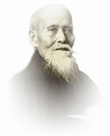

Aikido jest sztuką samoobrony, która powstała na bazie takich sztuk walki jak na przykład: ju-jitsu, aikijitsu, kenjitsu. Za jej twórcę i kodyfikatora uważa się Morihei Ueshibę. Według Ueshiby celem aikido ma być doskonalenie samego siebie, a nie doskonalenie się w walce (między innymi dlatego w aikido nie ma zawodów).
Techniki aikido opierają się na wykorzystaniu siły przeciwnika przeciwko niemu: do zneutralizowania jego ataku. Techniki są tak skonstruowane, że dają szansę nawet w starciu z przeciwnikiem większym i silniejszym. W samoobronie stosuje sie uniki, rzuty, dźwignie (szczególnie na małe stawy – łokcie i nadgarstki) oraz atemi waza, czyli uderzenia i uciski w punkty witalne.

MORIHEI UESHIBA
Twórca i kodyfikator aikido. Trenował u wielu znanych mistrzów owych czasów. Uczył się ju-jitsu, japońskiej szermierki oraz Daito-Ryu jujutsu. W 1938 roku Ueshiba został uznany za najbardziej zasłużonego instruktora budo w Japonii.
Najważniejszymi uczniami Ueshiby byli m.in.: Morihiro Saito, Koichi Tochei, Gozo Shioda, Hirokazu Kobayashi, Kissomaru Ueshiba, Nobuyoshi Tamura. Uczniowie mistrza Ueshiby prezentują diametralnie różne style Aikido. Wynika to z faktu, że pobierali od niego nauki w różnych okresach jego życia a aikido O’Senseia Ueshiby ulegało ciągłej ewolucji. W naszej szkole uczymy stylu propagowanego przez mistrza Kobaysahiego.

Mistrz urodził się w 1929 r. w Osace, w Japonii. Jako kilkunastoletni chłopiec zaczął praktykować tradycyjne japońskie sztuki walki kendo, judo i karate. W 1946 roku poznał mistrza Morihei Ueshibę i został jednym z jego najbliższych uczniów. Aikido mistrza Kobayashiego charakteryzuje się krótkim, pełnym mocy i precyzyjnym działaniem. Kluczowa jest kontrola linii centralnej przeciwnika. Podstawową zasadą takiego aikido jest „meguri” – okrężne ruchy nadgarstków, korelacja dynamiki przedramion i bioder. W tej szkole duży nacisk kładzie się także na pracę bokkenem i jo. Zasadniczą rolą treningu walki bokenem jest nauka odpowiedniego czasu wykonywania techniki.